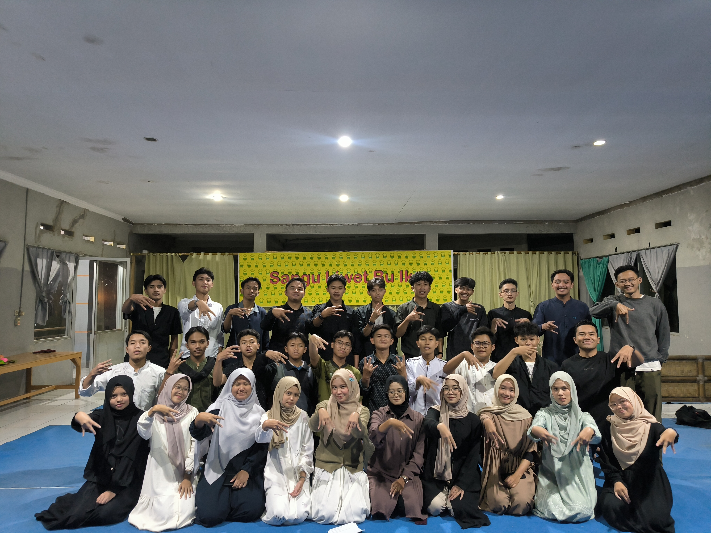
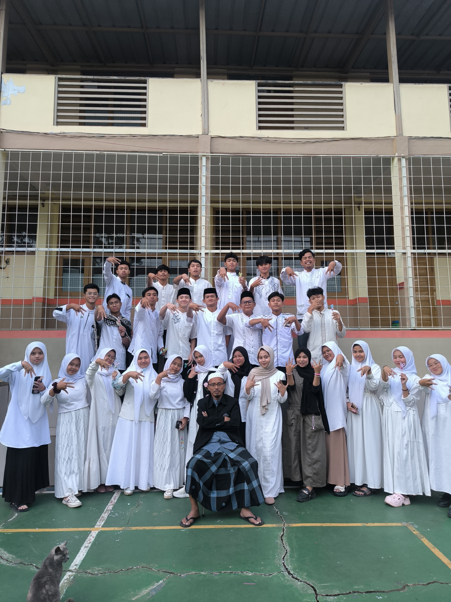
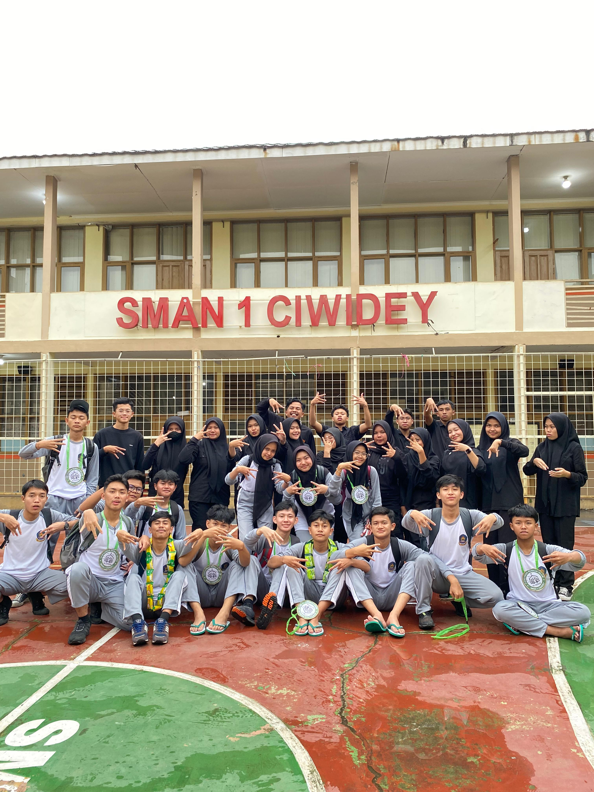
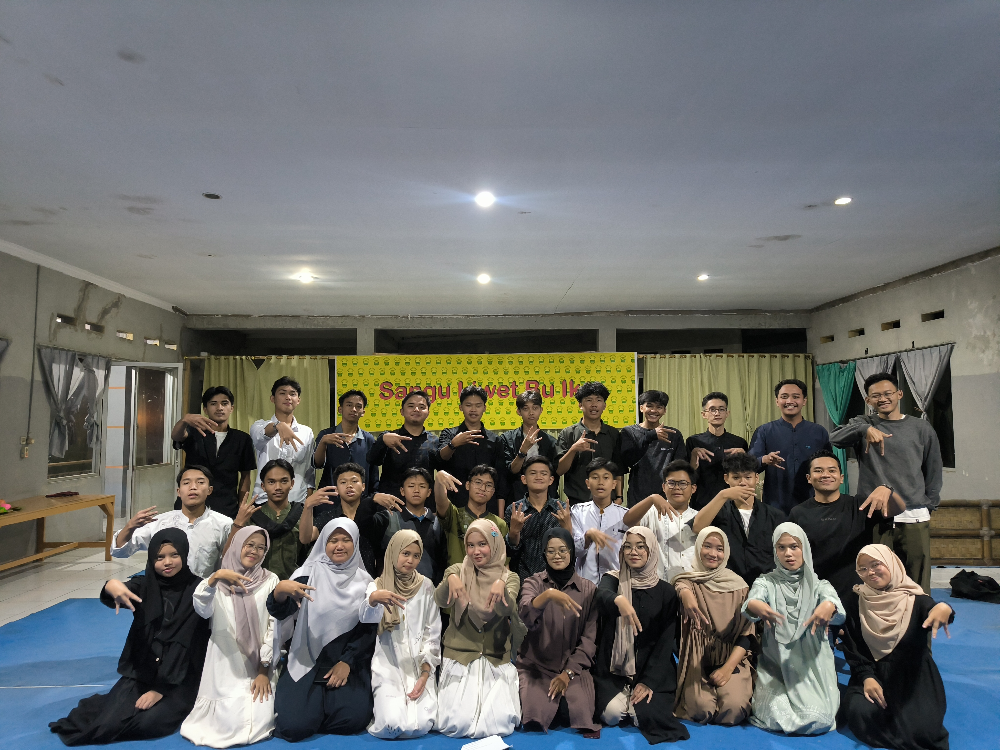
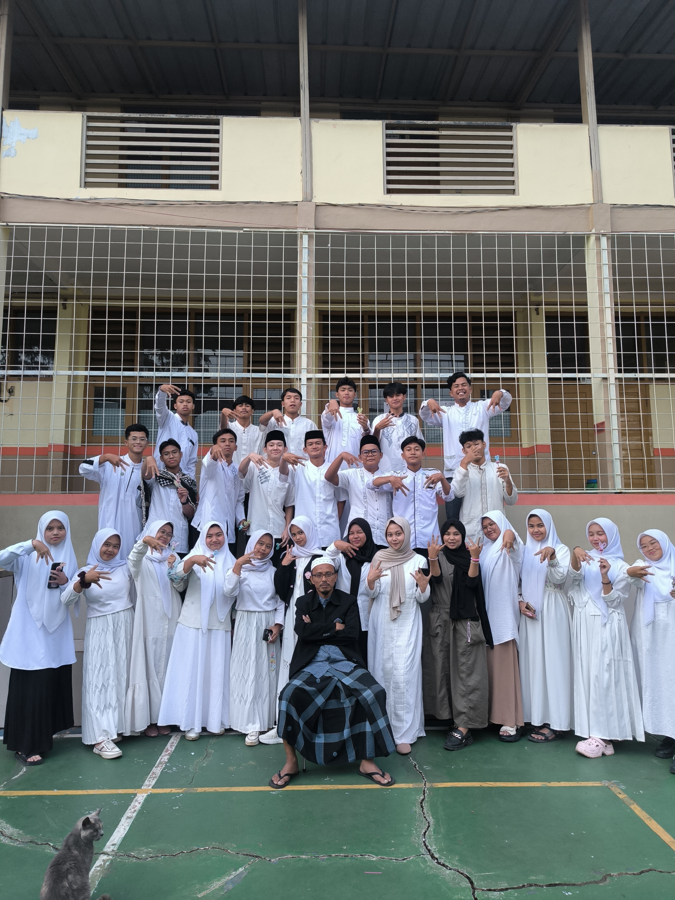
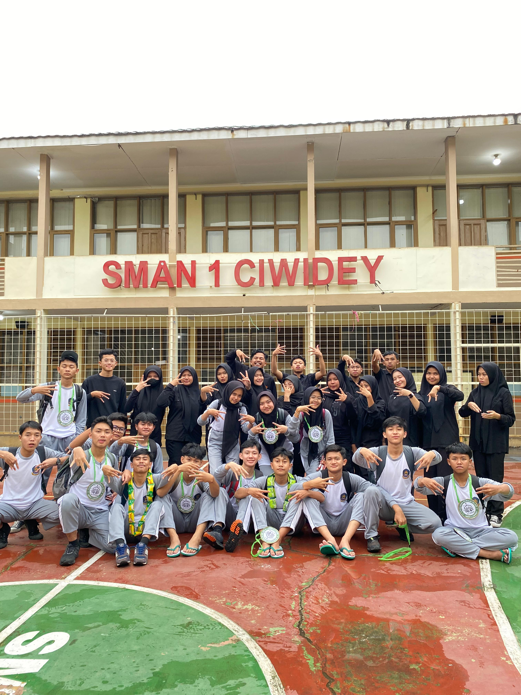
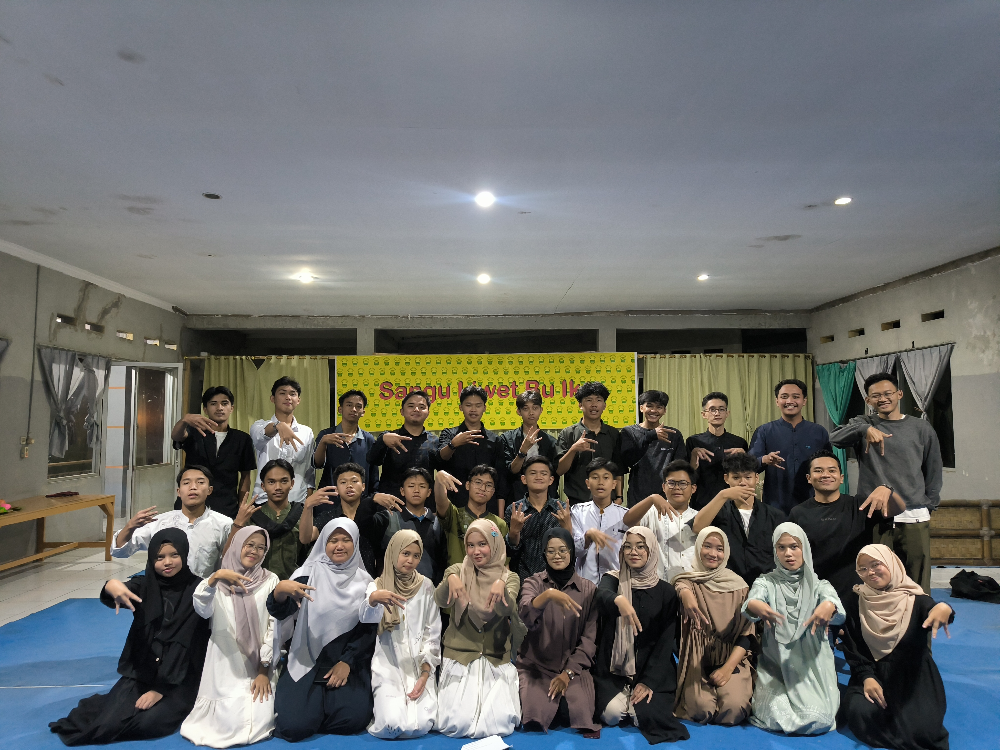
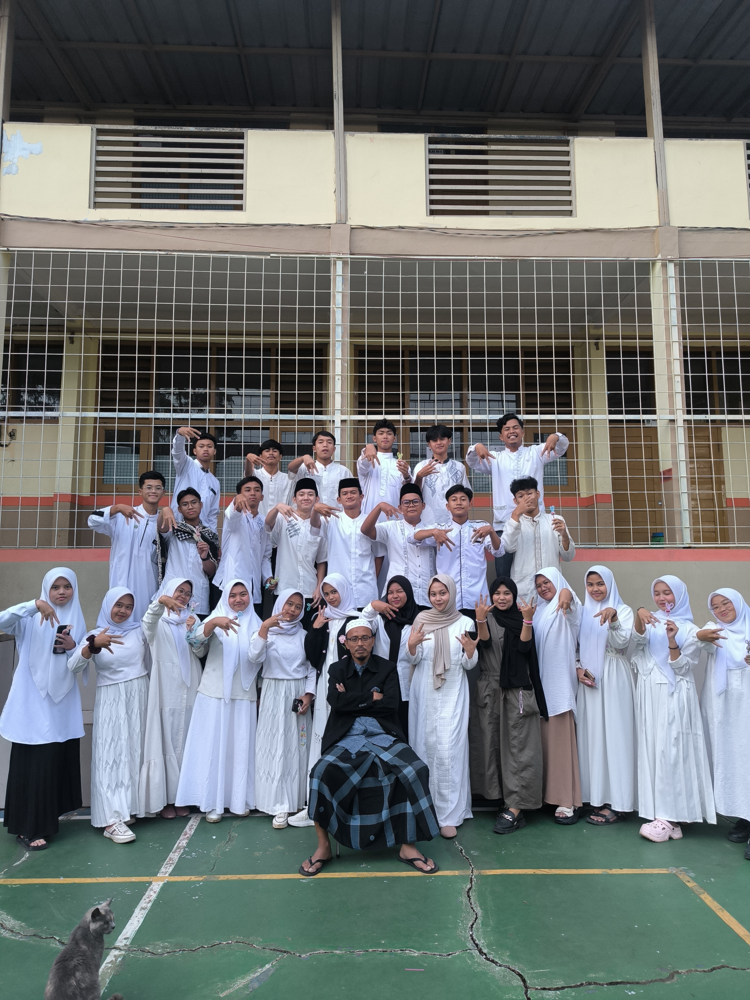
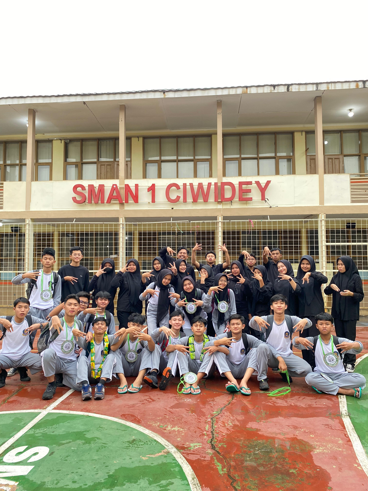

Galeri Kegiatan
 





"Menjaga tradisi lama yang baik dan Memunculkan tradisi baru yang lebih baik"
Pak Entis Setiawan, S.Pd.
DKM (Dewan Kemakmuran Masjid) SMAN 1 Ciwidey adalah organisasi yang bergerak di bidang keagamaan Islam di lingkungan sekolah. Kami bertujuan membina akhlak dan semangat berislam dalam diri siswa-siswi melalui kegiatan yang positif dan bermanfaat.
Visi: Mewujudkan generasi muslim yang berilmu, berakhlak, dan aktif dalam syiar Islam.
Misi:
Ketua
Wakil Ketua
Sekretaris
Bendahara
Departemen Umum
Instagram: @dkmsmansadey
Ketua DKM: Ferdiyanto
WhatsApp Ketua: ---
Shalat tepat waktu adalah tanda kedisiplinan dan kecintaan kepada Allah. Rasulullah SAW bersabda: "Amalan yang paling dicintai Allah adalah shalat pada waktunya."
Baca Selengkapnya



Ingin menjadi bagian dari GARIS atau ikut kegiatan kami?
Isi Formulir Pendaftaran"Bergabung dengan GARIS membuat aku lebih semangat untuk belajar Islam dan menjadi tahu apa itu kebersamaan dan kehangatan!"
- Anonim, Alumni 2024
Menuju Maulid Nabi Muhammad SAW: